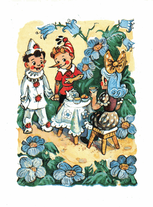
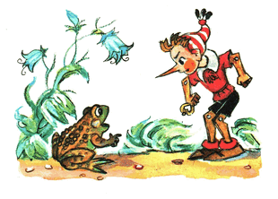
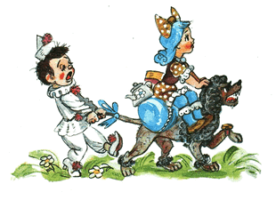

Ketika matahari menyingsing di puncak gunung berbatu, Buratino dan Pierrot merayap keluar dari semak-semak dan berlari melintasi lapangan, ke tempat dimana kemarin malam si tikus-terbang menculik Buratino dari rumah gadis berambut biru ke Negeri Idiot.
Lucu melihat kelakuan Pierrot; dia tergesa-gesa ingin segera bertemu dengan Malavina.
- Dengar, /dia bertanya setiap lima belas detik/ Buratino, kira-kira, apakah dia akan nyaman padaku?
- Mana kutahu...
Lima belas detik kemudian:
- Dengar, Buratino, bagaimana kalau dia tidak nyaman?
- Mana kutahu...
Akhirnya mereka melihat sebuah rumah mungil berwarna putih yang di muka jendelanya terlukis matahari, bulan dan bintang.
Asap mengepul dari cerobongnya, di atasnya melayang awan kecil, yang mirip kepala kucing.
Pudel Artemon tengah duduk di teras, sesekali dia menggonggong pada awan itu.
Buratino tidak begitu ingin kembali pada gadis berambut biru. Tapi dia lapar dan dari kejauhan hidungnya mencium aroma susu rebus.
- Kalau sekali lagi gadis itu coba-coba mendidikku, habiskan segelas susu, dan aku tak akan berlama-lama di sini.
Pada saat yang sama Malavina keluar dari rumah. Satu tangannya memegang teko, satunya lagi memegang sekeranjang biskuit.
Dua matanya masih berkaca-kaca; dia yakin, bahwa si tikus-terbang telah menculik Buratino dari lemari dan memakannya.
Setelah dia duduk di meja boneka di jalan berpasir; bunga-bunga biru bergoyah, kupu-kupu berterbangan di atasnya, seperti daun-daun kuning dan putih, dan muncullah Buratino dan Pierrot
Malavina membuka matanya begitu lebar hingga dua bocah kayu itu dapat terjun bebas ke dalamnya.
Pierrot, begitu melihat Malavina dia langsung komat-kamit mengeluarkan kata-kata yang begitu ngelantur dan konyol, yang tidak akan kita bahas di sini.
Buratino berkata seolah tidak terjadi apa-apa:
- Nih, kubawa dia untuk kau didik.
Malavina akhirnya mengerti bahwa ini bukanlah mimpi.
- Ah, betapa bahagianya! /bisiknya, tapi seketika suaranya meninggi layaknya orang dewasa/ Boys, ayo langsung mandi dan gosok gigi. Artemon, giring anak-anak ini ke sumur.
- Tuh kan, /Buratino menggerutu/ yang ada di kepala dia hanya seputar: mandi lah, gosok gigi lah! Siapapun yang ada di dunia ini harus bersih berkilauan...
Mereka pun mandi. Artemon dengan rumbai di ujung ekornya menyikat pakaian mereka
Duduk di meja makan. Buratino memenuhi kedua pipinya dengan makanan. Pierrot satu gigit pun tidak dia cicipi; dia hanya memandangi Malavina, seolah-olah ia terbuat dari kue almond. Ia sampai bosan dibuatnya.
- Yah, /Iapun berkata padanya/ apa yang kamu cari dari wajah saya? Sarapanlah, silahkan, pelan-pelan.
- Malavina, /Pierrot Berkata/ sudah lama saya tidak makan apapun, saya sibuk merangkai puisi...
Buratino gemetar menahan tawa.
Malavina terkejut dan sekali lagi matanya melebar.
- Kalau begitu, bacakanlah puisimu
Dengan satu tangan lentik-nya dia bertopang pipi, dan menaikkan dua mata indahnya ke arah awan, yang mirip kepala kucing.
Pierrot mulai membaca puisinya, melolong-lolong, seolah dia berada di dasar sumur yang dalam:
Malavina lari mengasingkan diri,
Malavinaku pergi, oh pengantinku ini...
Hatiku pilu, harus kemana aku tak tahu...
Akankah lebih baik, berpisah dengan kehidupan boneka?
Belum tuntas Pierrot membaca, belum puas Malavina menghayati puisi, yang rupanya membuat ia tersanjung, mendadak di jalan berpasir berpasir datang seekor kodok.
Matanya melotot panik, ia berkata:
- Tadi malam, si penyu Tortilla sinting, memberi tahu Karabas Barabas semua hal tentang kunci emas...
Malavina menjerit ketakutan, meski ia tidak mengerti apa yang terjadi.
Pierrot linglung, seperti para penyair, menyuarakan seruan-seruan kebingungan, yang tidak akan kita bahas disini. Sedangkan Buratino segera beranjak meraup semua kue, gula, dan permen ke dalam saku.
- Kita harus cepat-cepat kabur. Kalau anjing-anjing polisi itu keburu membawa Karabas Barabas kesini, mampus kita.
Malavina berubah pucat, seperti sayap kupu-kupu putih. Pierrot, mengira, bahwa ia sekarat, dia cekok Malavina dengan teko, sehingga gaun cantik Malavina pun berlumuran cokelat.
Artemon melompat dan menggonggong dengan keras; dia kesal karena harus mencuci gaun Malavina; dia terkam kerah Pierrot dan mulai membanting-banting, hingga Pierrot berkata tergagap-gagap:
- Su su sudahlah.. mohon...
Si katak menatap keributan ini dengan mata melototnya dan lanjut berkata:
- Karabas Barabas berserta anjing polisi akan tiba disini sekitar seperempat jam...
Malavina lari ganti pakaian, Pierrot putus asa mengepal dua tangannya, mencoba untuk pingsan bahkan menjatuhkan punggung ke jalan berpasir. Artemon membawa bungkusan berisi perabot rumah tangga. Pintu-pintu dibanting. Burung pipit heboh berceloteh di semak-semak. Burung layang-layang melesat-lesat mengitari wilayah kekuasaannya. Burung hantu menambah kepanikan dengan tertawa liar di atas loteng.
Seorang Buratino tidak kehilangan akal. Dia pikulkan ke punggung Artemon dua bungkusan berisi barang-barang penting. Malavina duduk di atas bungkusan-bungkusan itu, berbusana gaun piknik yang cantik. Dia perintahkan Pierrot untuk berpegangan pada ekor anjing. Dirinya sendiri memimpin di depan:
- Jangan panik! ayo kabur!
Ketika mereka...; Di sana ada Buratino, dengan gagah memimpin di depan anjing, Malavina, gondal-gandul di atas bungkusan, dan Pierrot di belakangnya, alih-alih berfikir waras malah komat-kamit dengan puisi konyolnya...; Ketika mereka merayap keluar dari rerumputan gondrong ke lapangan rimbun; dari tepi hutan, melambai-lambai, janggut gimbal Karabas Barabas. Dia dengan telapak tangannya menutupi mata dari silau matahari, mengintai kesana kemari.